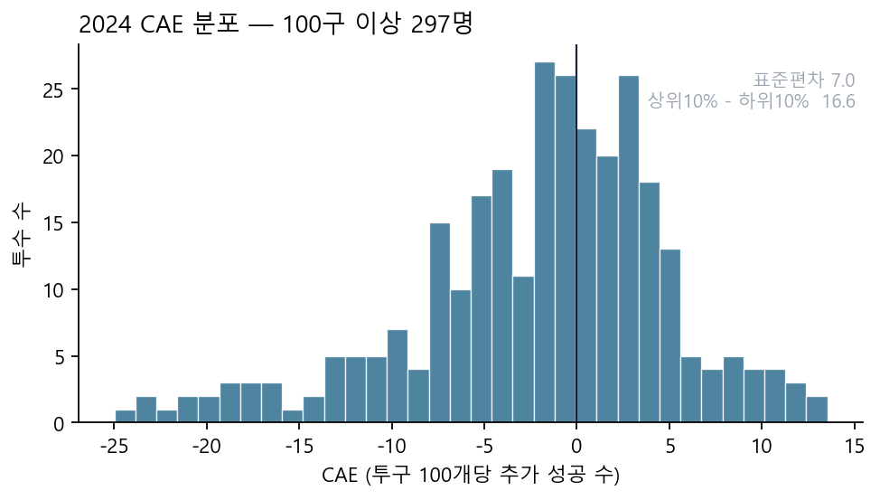
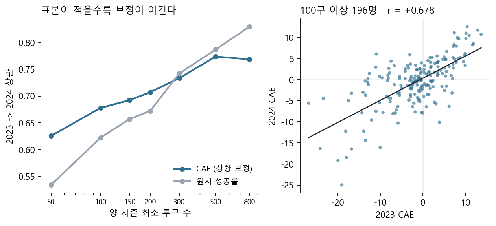
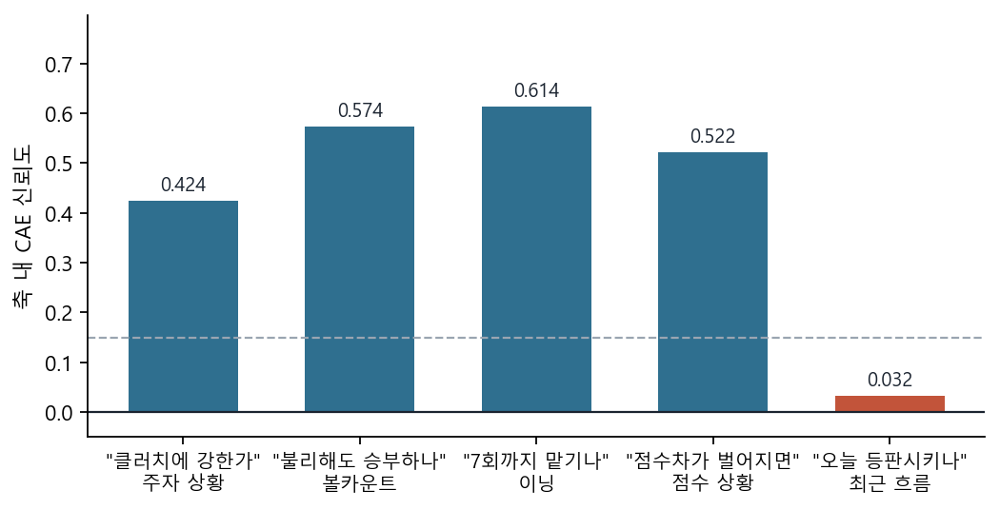
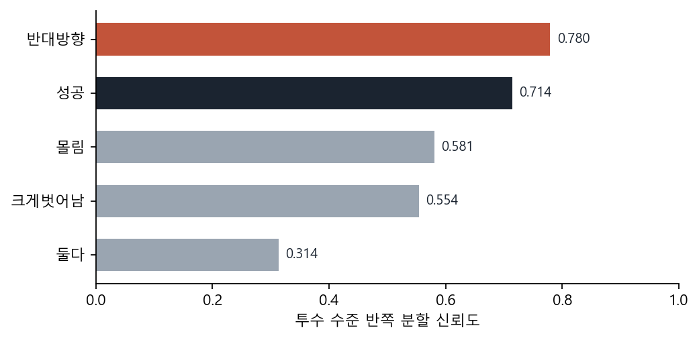

<title>제구력은 하나의 숫자가 아니다</title>
<link rel="preconnect" href="https://fonts.googleapis.com">
<link rel="preconnect" href="https://fonts.gstatic.com" crossorigin>
<link rel="stylesheet" href="https://fonts.googleapis.com/css2?family=Noto+Serif+KR:wght@500;700&family=Noto+Sans+KR:wght@300;400;500;700&family=IBM+Plex+Mono:wght@400;600&display=swap">
<style>
:root{
  --ink:#1b2430;      /* 그림과 같은 팔레트 (tools/cae_fig.py) */
  --acc:#2f6f8f;
  --warn:#c2543a;
  --mute:#9aa5b1;
  --paper:#f6f7f8;
  --line:#dfe4e8;
  --serif:'Noto Serif KR','Malgun Gothic',serif;
  --sans:'Noto Sans KR','Malgun Gothic',sans-serif;
  --mono:'IBM Plex Mono','Consolas',monospace;
}
*{box-sizing:border-box}
body{margin:0;background:#8d959c;font-family:var(--sans);color:var(--ink);
     -webkit-print-color-adjust:exact;print-color-adjust:exact}
.slide{width:1280px;height:720px;background:var(--paper);position:relative;
       margin:0 auto 22px;padding:62px 80px 58px;overflow:hidden;
       display:flex;flex-direction:column}
.eyebrow{font-size:14px;letter-spacing:.16em;color:var(--acc);font-weight:700;
         text-transform:uppercase;margin-bottom:14px}
h1{font-family:var(--serif);font-size:64px;line-height:1.18;margin:0;
   font-weight:700;text-wrap:balance;letter-spacing:-.02em}
h2{font-family:var(--serif);font-size:38px;line-height:1.25;margin:0 0 8px;
   font-weight:700;text-wrap:balance;letter-spacing:-.01em}
.sub{font-size:19px;color:#4d5966;line-height:1.6;margin:0 0 26px;max-width:74ch;
     font-weight:300}
.num{font-family:var(--mono);font-variant-numeric:tabular-nums}
.foot{position:absolute;left:80px;right:80px;bottom:26px;display:flex;
      justify-content:space-between;font-size:12px;color:var(--mute);
      border-top:1px solid var(--line);padding-top:10px}
.body{flex:1;min-height:0}
.cols{display:grid;gap:34px}
.c2{grid-template-columns:1fr 1fr}
.c25{grid-template-columns:1fr 1.35fr}
.c52{grid-template-columns:1.5fr 1fr}
table{border-collapse:collapse;width:100%;font-size:16px}
th{text-align:left;font-weight:500;color:var(--mute);font-size:13px;
   letter-spacing:.06em;padding:0 10px 7px 0;border-bottom:1px solid var(--line)}
td{padding:8px 10px 8px 0;border-bottom:1px solid var(--line);
   font-variant-numeric:tabular-nums}
td.n,th.n{text-align:right;font-family:var(--mono)}
tr.hi td{background:#eaf1f5;font-weight:700}
tr.bad td{color:var(--warn)}
.stat{display:flex;gap:38px;margin:6px 0 22px}
.stat div{flex:0 0 auto}
.stat b{display:block;font-family:var(--mono);font-size:44px;line-height:1.05;
        font-weight:600;letter-spacing:-.02em}
.stat span{font-size:13px;color:var(--mute)}
.k{color:var(--acc)}.r{color:var(--warn)}
figure{margin:0}
figure img{width:100%;display:block;border:1px solid var(--line);background:#fff}
figcaption{font-size:13px;color:var(--mute);margin-top:8px;line-height:1.5}
.note{font-size:15px;line-height:1.65;color:#3f4a56}
.note b{color:var(--ink)}
ul{margin:0;padding-left:19px}
li{font-size:16px;line-height:1.62;margin-bottom:9px;color:#3f4a56}
li b{color:var(--ink)}
.card{background:#fff;border:1px solid var(--line);padding:18px 20px;
      border-left:3px solid var(--acc)}
.card.r{border-left-color:var(--warn)}
.card h3{margin:0 0 7px;font-size:17px;font-weight:700;color:var(--ink)}
.card p{margin:0;font-size:14px;line-height:1.6;color:#4d5966}
code{font-family:var(--mono);font-size:.93em;background:#eceff1;padding:1px 5px}
.big{font-family:var(--serif);font-size:27px;line-height:1.5;font-weight:500;
     max-width:40ch}
.slide[hidden]{display:none}   /* display:flex 가 UA 의 [hidden] 을 이긴다 */
@page{size:1280px 720px;margin:0}
@media print{body{background:#fff}.slide{margin:0;page-break-after:always}}
</style>
<script>
// 검토용: index.html#s9 로 열면 그 슬라이드 하나만 보인다.
// 해시가 없으면 아무것도 하지 않으므로 PDF 출력에는 영향이 없다.
addEventListener("DOMContentLoaded",function(){
  var m=/^#s(\d+)$/.exec(location.hash); if(!m) return;
  var a=document.querySelectorAll(".slide");
  for(var i=0;i<a.length;i++) a[i].hidden = (i+1)!=+m[1];
  document.body.style.background="#fff";
});
</script>

<!-- 1 ─────────────────────────────────────────────────────────── -->
<section class="slide" style="justify-content:center">
  <div class="eyebrow">LG Aimers 9기 · KBO 투구 제구 성공 예측</div>
  <h1>제구력은<br>하나의 숫자가 아니다</h1>
  <p class="sub" style="margin-top:26px;font-size:21px">
    투구별 확률 예측(STEP 01)을 재료로,<br>
    상황을 보정한 투수 제구력 지표 <b>CAE</b> 를 만들고 검증했다 (STEP 03).</p>
  <div class="stat" style="margin-top:18px">
    <div><b class="num">1,153.60</b><span>Private Score</span></div>
    <div><b class="num">+220.6</b><span>첫 제출 대비</span></div>
    <div><b class="num k">0.751</b><span>CAE 신뢰도 (원시 0.589)</span></div>
  </div>
  <div class="foot"><span>솔루션 PPT</span><span>2026-09</span></div>
</section>

<!-- 2 ─────────────────────────────────────────────────────────── -->
<section class="slide">
  <div class="eyebrow">문제 재정의</div>
  <h2>예측은 목적이 아니라 재료다</h2>
  <p class="sub">주최측 자료가 그린 흐름은 세 단계였다. 리더보드가 채점하는 것은
    첫 단계뿐이지만, 질문은 마지막 단계에 있다.</p>
  <div class="body cols c2">
    <div>
      <table>
        <tr><th>단계</th><th>내용</th></tr>
        <tr><td>STEP 01</td><td>투구별 제구 성공 확률 예측</td></tr>
        <tr><td>STEP 02</td><td>상황별 누적</td></tr>
        <tr class="hi"><td>STEP 03</td><td>투수 제구력 평가</td></tr>
      </table>
      <p class="note" style="margin-top:24px">
        문제의 동기는 <b>“이 투수는 정말 제구가 좋은 투수일까?”</b> 였다.
        ERA·BB%·K% 는 결과만 알려준다. 그래서 우리는 예측 모델을
        <b>지표를 만들기 위한 도구</b>로 쓰기로 했다.</p>
    </div>
    <div style="display:flex;flex-direction:column;gap:16px;justify-content:center">
      <div class="card"><h3>그래서 무엇을 만들었나</h3>
        <p>같은 상황을 던진 평균 투수 대비 얼마나 더 성공시켰는가 —
           <b>CAE (Command Above Expected)</b>.</p></div>
      <div class="card"><h3>그리고 무엇을 증명했나</h3>
        <p>지표를 <b>제안하는 것</b>과 <b>믿을 수 있음을 보이는 것</b>은 다르다.
           신뢰도·연도 간 이행·안정화 표본 셋으로 검증했다.</p></div>
      <div class="card r"><h3>무엇이 잡음인지도 말한다</h3>
        <p>코치의 네 질문 중 <b>“최근 흐름”은 측정되지 않는다</b>.
           숫자로 그렇게 나왔고, 그대로 보고한다.</p></div>
    </div>
  </div>
  <div class="foot"><span>제구력은 하나의 숫자가 아니다</span><span>2 / 14</span></div>
</section>

<!-- 3 ─────────────────────────────────────────────────────────── -->
<section class="slide">
  <div class="eyebrow">결과</div>
  <h2>상위 8%, 그리고 컷 미달</h2>
  <p class="sub">숨기지 않는다. 우리 점수는 100인 컷에 <b>23.17점</b> 모자랐다.
    이 자료의 값어치는 순위가 아니라 그 과정에서 만든 것에 있다.</p>
  <div class="body">
    <div class="stat">
      <div><b class="num">1,153.60</b><span>최종 Private</span></div>
      <div><b class="num">79 <small style="font-size:20px;color:var(--mute)">/ 990팀</small></b><span>팀 순위 (상위 8.0%)</span></div>
      <div><b class="num">240 <small style="font-size:20px;color:var(--mute)">/ 1,945명</small></b><span>개인 순위</span></div>
      <div><b class="num r">−23.17</b><span>100인 컷(1,176.78) 대비</span></div>
    </div>
    <div class="cols c2" style="margin-top:6px">
      <table>
        <tr><th>기준점</th><th class="n">점수</th></tr>
        <tr><td>주최측 공식 베이스라인 (RandomForest)</td><td class="n">549.51</td></tr>
        <tr><td>우리 첫 제출</td><td class="n">932.96</td></tr>
        <tr class="hi"><td>우리 최종 (v10wtor)</td><td class="n">1,153.60</td></tr>
        <tr><td>100인 컷</td><td class="n">1,176.78</td></tr>
        <tr><td>1위</td><td class="n">1,295.68</td></tr>
      </table>
      <p class="note">
        평가지표는 Brier Skill Score 를 10만 배 한 값이라
        <b>상위권 전체가 1% 대의 좁은 띠 안</b>에 들어 있다.
        베이스라인 대비 2.1배를 올렸지만 컷까지는 2.0% 가 모자랐다.<br><br>
        총 <b>48회</b> 제출했고, 모든 채택 판단은 리더보드 실측으로만 했다.
        홀드아웃 수치로 채택한 적은 한 번도 없다 — 이유는 <b>5쪽</b>에 있다.</p>
    </div>
  </div>
  <div class="foot"><span>제구력은 하나의 숫자가 아니다</span><span>3 / 14</span></div>
</section>

<!-- 파이프라인 ─────────────────────────────────────────────── -->
<section class="slide">
  <div class="eyebrow">최종 솔루션</div>
  <h2>제출한 것 — 130피처 · 5분류 CatBoost · 30모델</h2>
  <div class="body cols c25" style="margin-top:6px">
    <div>
      <table>
        <tr><th style="width:78px">단계</th><th>내용</th></tr>
        <tr><td>입력</td><td>train 1,475,092행 x 49컬럼<br>
            <span style="color:var(--mute)">+ 트랙맨 1,793,078행 (투수 매핑 재구축본)</span></td></tr>
        <tr><td>전처리</td><td><span class="num">step1~18</span> 파생 ·
            조건부 투수통계 4종 · <b>당해 시즌 복원</b> 투수 5 + 타자 2</td></tr>
        <tr><td>지시자</td><td>범주형 조합 3 · 팀 관여 OR 플래그 10 ·
            체제 전환 1</td></tr>
        <tr class="hi"><td>피처</td><td><b>130개</b></td></tr>
        <tr class="hi"><td>타겟</td><td><b>5분류</b> — 성공 / 몰림만 / 반대만 / 둘다 / 크게벗어남</td></tr>
        <tr><td>보조</td><td>교차적합 <span class="num">P(reverse|X)</span> 1개
            <span style="color:var(--mute)">(학습행 out-of-fold, 추론행 3폴드 평균)</span></td></tr>
      </table>
    </div>
    <div>
      <div class="card"><h3>모델</h3>
        <p><b>CatBoost MultiClass (GPU)</b> · 10-fold x 3-seed = <b>30 모델</b><br>
           <span class="num">iterations 1000 · depth 8 · learning_rate 0.0228</span><br>
           seeds <span class="num">[42, 202, 2024]</span> · 학습 약 63분</p></div>
      <div class="card" style="margin-top:12px"><h3>후처리</h3>
        <p>폴드별 <b>IsotonicRegression</b> (이진 y 기준) -> 30모델 평균<br>
           -> <b>재중심화</b> 로짓 상수 <span class="num">-0.0741</span><br>
           <span style="color:var(--mute)">그 상수는 학습 시점 홀드아웃
           (~2023 -> 2024)에서 측정해 고정한다. 평가 데이터를 보고 정하면 규정 위반이다.</span></p></div>
      <p class="note" style="margin-top:14px">
        <b>OOF 스킬 2.222%</b> · Private <b>1,153.6031</b><br>
        학습 노트북과 제출용 <span class="num">script.py</span> 는 전처리 소스
        문자열 하나를 공유한다. 두 경로가 갈라지는 것이 이 프로젝트에서 가장 비쌌던
        버그 유형이었다 — 트랙맨 병합 방식 불일치 하나로 <b>36점</b>이 샜다.</p>
    </div>
  </div>
  <div class="foot"><span>제구력은 하나의 숫자가 아니다</span><span>4 / 14</span></div>
</section>

<!-- 4 ─────────────────────────────────────────────────────────── -->
<section class="slide">
  <div class="eyebrow">과정</div>
  <h2>상승분의 40%가 발견 하나에서 나왔다</h2>
  <p class="sub">모델 용량·하이퍼파라미터·앙상블 구성은 전부 일찍 포화했다.
    점수를 실제로 움직인 것은 <b>데이터를 다시 읽은 다섯 번</b>이었다.</p>
  <div class="body cols c52">
    <table>
      <tr><th>변경</th><th>종류</th><th class="n">리더보드</th></tr>
      <tr class="hi"><td>당해 시즌 성적 복원 <span class="num">wseason5</span></td><td>새 정보</td><td class="n">+61.72</td></tr>
      <tr class="hi"><td>타자측 복원 <span class="num">wsbat</span></td><td>새 정보</td><td class="n">+30.11</td></tr>
      <tr class="hi"><td>팀13 × 체제전환 지시자 <span class="num">t13</span></td><td>데이터 사고 진단</td><td class="n">+20.58</td></tr>
      <tr><td>타겟 5분류 <span class="num">multicls</span></td><td>타겟 재정의</td><td class="n">+12.85</td></tr>
      <tr><td>범주형 조합 <span class="num">phteam</span></td><td>표현 비용</td><td class="n">+7.79</td></tr>
      <tr class="bad"><td>반복수 1000 → 500</td><td>용량 축소</td><td class="n">−23.07</td></tr>
      <tr class="bad"><td>타겟 × 구종 6분류</td><td>직교 축 분할</td><td class="n">−82.33</td></tr>
    </table>
    <div>
      <p class="note"><b>검증 지표가 반복해서 틀렸다.</b> 2024 홀드아웃은
        거짓 양성(+27 → 실측 −22)도 거짓 음성(+3 → 실측 +30)도 냈다.
        그래서 규칙을 하나 세웠다 —</p>
      <div class="card" style="margin-top:14px"><h3>전달률은 변경의 <i>종류</i>에 달렸다</h3>
        <p><span class="num">새 정보 ×0.85 · 버그 수정 ×0.45 ·
           파라미터 ×0.25 · 기존 피처 재조합 ×0.10</span><br>
           같은 홀드아웃 +40 이라도 <b>어디서 온 +40 인지</b>에 따라
           리더보드 이득이 8배 차이 났다.</p></div>
      <p class="note" style="margin-top:14px">
        이 표가 다음 세 장의 이유다. 이득은 전부
        <b>“다른 행에서 정보를 끌어온” 변경</b>에서 나왔다.</p>
    </div>
  </div>
  <div class="foot"><span>제구력은 하나의 숫자가 아니다</span><span>5 / 14</span></div>
</section>

<!-- 5 ─────────────────────────────────────────────────────────── -->
<section class="slide">
  <div class="eyebrow">발견 ① · +61.72</div>
  <h2>평가 행이 이미 갖고 있던 당해 시즌 정보</h2>
  <p class="sub">주최측이 준 <span class="num">asof_pitcher_success_rate</span> 는
    <b>커리어 누적</b>이라 투수마다 섞인 시즌 수가 다르다. 같은 컬럼인데 성능이 6배 갈렸다.</p>
  <div class="body cols c2">
    <div>
      <table>
        <tr><th>2024 조각</th><th class="n">비중</th><th class="n">그 컬럼 단독 스킬</th></tr>
        <tr><td>이력 있는 투수</td><td class="n">80.1%</td><td class="n">141</td></tr>
        <tr class="hi"><td>신규 투수 (직전 시즌 없음)</td><td class="n">19.9%</td><td class="n">906</td></tr>
      </table>
      <p class="note" style="margin-top:20px">
        신규 투수는 직전 시즌이 없어 그 값이 <b>순수한 당해 시즌 성적</b>이다.
        이력이 있으면 2019년(리그 .5647)부터 섞인 낡은 값이 된다.
        <b>즉 신선한 정보가 낡은 정보에 희석되고 있었다.</b></p>
    </div>
    <div>
      <div class="card"><h3>복원</h3>
        <p><span class="num">커리어 누적 개수 = 비율 × asof_n</span> (행이 갖고 있다)<br>
           <span class="num">− 시즌 시작 시점 누적</span> (train 으로 만든 투수별 룩업)<br>
           <span class="num">= 당해 시즌 성적</span></p></div>
      <p class="note" style="margin-top:16px">
        <b>규정 확인</b>: 행 A 자신의 입력값과 공식 학습 데이터로 만든 통계만 쓴다.
        평가 데이터의 다른 행을 보지 않는다. 주최측이 제시한 판정 시험
        (같은 행을 단독 예측 vs 전체와 함께 예측)을 실측으로 통과했다 —
        최대 차이 <span class="num">1.11e-16</span>.</p>
      <p class="note" style="margin-top:14px">
        같은 기계를 타자측에 그대로 돌려 <b>+30.11</b> 을 더 얻었다.
        분해 가능한 <span class="num">asof</span> 컬럼 10개를 전부 확인했고,
        구종 배합 3개는 <b>0</b> 이었다 — 성향은 이미 모델 안에 있었다.</p>
    </div>
  </div>
  <div class="foot"><span>제구력은 하나의 숫자가 아니다</span><span>6 / 14</span></div>
</section>

<!-- 6 ─────────────────────────────────────────────────────────── -->
<section class="slide">
  <div class="eyebrow">발견 ② · 라벨 복원</div>
  <h2>없다고 알려진 라벨을 되살렸다</h2>
  <p class="sub">투구별 실패 <b>유형</b> 라벨은 제공되지 않는다. 그런데
    <span class="num">asof_pitcher_n</span> 이 투수 안에서 정확히 +1 씩 증가하므로,
    인접 두 행의 누적 개수 차분이 곧 그 투구의 라벨이다.</p>
  <div class="body cols c25">
    <div>
      <table>
        <tr><th>검산</th><th class="n">결과</th></tr>
        <tr><td>투수 내 <span class="num">n</span> 증분 +1</td><td class="n">1.000000</td></tr>
        <tr class="hi"><td>복원 <span class="num">success</span> vs 정답</td><td class="n">1.000000</td></tr>
        <tr><td>독립 경로(타자측)와 교차 검증</td><td class="n">1.000000</td></tr>
      </table>
      <p class="note" style="margin-top:18px">
        <span class="num">success</span> 는 <b>정답 컬럼이 있어 검산이 된다.</b>
        147만 행 전부 일치했으므로 나머지 라벨도 같은 방식으로 신뢰할 수 있다.
        타자측 컬럼이라는 <b>독립 경로</b>로 한 번 더 대조했다.</p>
    </div>
    <div>
      <p class="note"><b>이진 타겟 하나가 5분류로 늘어난다.</b>
        성공 / 몰림만 / 반대만 / 둘다 / 크게벗어남.
        <span class="num">middle</span> 과 <span class="num">reverse</span> 는
        배타적이 아니라 <b>2비트 코드</b>였다 (둘 다인 행이 실패의 7.2%).</p>
      <p class="note" style="margin-top:14px">
        유형별 드리프트가 <b>서로 반대</b>다 (2019→2024, 정규시즌):</p>
      <table style="margin-top:8px">
        <tr><th>유형</th><th class="n">변화</th><th></th></tr>
        <tr><td>몰림</td><td class="n">+0.0484</td><td></td></tr>
        <tr><td>반대방향</td><td class="n">+0.0543</td><td></td></tr>
        <tr class="bad"><td>크게벗어남</td><td class="n">−0.0414</td><td>반대 방향</td></tr>
        <tr class="hi"><td>총 변동 0.144 → 순변동</td><td class="n">0.060</td><td>2.4배를 가린다</td></tr>
      </table>
      <p class="note" style="margin-top:14px">
        이진 타겟은 서로 상쇄되는 세 과정을 하나로 뭉갠다. 나누자
        리더보드 <b>+12.85</b>. 대조군(유형 라벨만 무작위로 섞기)으로
        기전도 갈랐다 — <b>분할 자체는 −23 의 비용</b>이고 유형의
        의미론이 <b>+29</b> 를 얹는다.</p>
    </div>
  </div>
  <div class="foot"><span>제구력은 하나의 숫자가 아니다</span><span>7 / 14</span></div>
</section>

<!-- 7 ─────────────────────────────────────────────────────────── -->
<section class="slide">
  <div class="eyebrow">발견 ③ · +20.58</div>
  <h2>한 팀의 라벨이 시즌 중간에 다르게 매겨졌다</h2>
  <p class="sub">특정 팀이 관여한 경기의 제구 성공률이 2023년 5월에
    <b>계단처럼</b> 바뀐다. 야구가 바뀐 게 아니라 <b>측정계가 바뀌었다</b>.</p>
  <div class="body cols c2">
    <div>
      <table>
        <tr><th>정규시즌, 리그 평균 대비</th><th class="n">2022</th><th class="n">2023</th><th class="n">2024</th></tr>
        <tr class="hi"><td>해당 팀 관여 (투구의 19.9%)</td><td class="n">−0.041</td><td class="n">+0.051</td><td class="n">+0.049</td></tr>
        <tr><td>같은 구장을 쓰는 다른 팀</td><td class="n">+0.001</td><td class="n">+0.011</td><td class="n">−0.007</td></tr>
      </table>
      <p class="note" style="margin-top:18px">
        <b>대조군이 결정적이었다.</b> 두 팀은 <b>같은 구장</b>을 쓴다.
        하드웨어나 구장 특성이면 두 팀이 함께 움직여야 하는데
        <b>한 팀 경기만</b> 움직인다.</p>
      <p class="note" style="margin-top:12px">
        트랙맨 원본에서도 릴리스 위치 3종과 속도 2종이
        <b>한 달 만에 동시에</b> 이동했다 (extension −0.21σ).
        투수는 그렇게 바뀌지 않는다.</p>
    </div>
    <div>
      <div class="card"><h3>난이도가 아니라 정의가 바뀌었다</h3>
        <p>실패 <b>안에서의 구성비</b>가 이동했다 —
           반대방향 <span class="num">+6.5%p</span>,
           몰림 <span class="num">−8.0%p</span>.
           난이도 변화라면 구성비는 그대로여야 한다. ‘몰림 / 반대’ 의 갈림은
           전적으로 <b>포수가 어디를 요구했는가</b> 추정에 달려 있다.</p></div>
      <p class="note" style="margin-top:16px">
        지시자 두 개(<span class="num">팀 관여</span>,
        <span class="num">관여 × 시점</span>)를 수치 플래그로 주자
        리더보드 <b>+20.58</b>. 6시즌을 뭉치면 부호가 상쇄되는데
        <b>2025년은 전부 전환 후</b>라 그 구분이 그대로 이득이 된다.</p>
      <p class="note" style="margin-top:12px">
        이후 저카디널리티 컬럼 <b>105쌍을 전수 스캔</b>해 같은 유형이 더 있는지
        확인했다. 하나 더 찾았고(<b>+7.79</b>), 그것으로 이 축은 닫혔다.</p>
    </div>
  </div>
  <div class="foot"><span>제구력은 하나의 숫자가 아니다</span><span>8 / 14</span></div>
</section>

<!-- 검증 ───────────────────────────────────────────────────── -->
<section class="slide">
  <div class="eyebrow">검증과 규정 준수</div>
  <h2>제출 전에 네 가지를 매번 돌렸다</h2>
  <p class="sub">주최측이 공지한 <b>평가 데이터 독립 예측 원칙</b>과, 학습·추론 경로가
    조용히 갈라지는 것을 잡기 위한 자체 검사다. 전부 자동화돼 있다.</p>
  <div class="body cols c2">
    <div>
      <table>
        <tr><th>검사</th><th class="n">실측</th></tr>
        <tr class="hi"><td><b>행 독립성</b> — 같은 행을 단독 예측 vs 전체와 함께</td><td class="n">1.11e-16</td></tr>
        <tr><td>라벨 복원 <span class="num">success</span> vs 정답 (147만 행)</td><td class="n">1.000000</td></tr>
        <tr><td>학습/추론 피처 대조 (공통 94개)</td><td class="n">90개 완전일치</td></tr>
        <tr><td>상수 생존 — 상수를 지운 판과 예측 비교</td><td class="n">100.0%</td></tr>
      </table>
      <p class="note" style="margin-top:14px">
        첫 줄은 <b>주최측이 공지에 직접 제시한 판정 시험</b>이다.
        “어떤 행의 예측값은 test 에 그 행 하나만 있을 때와 전체가 함께 있을 때
        동일해야 한다.” 그대로 구현해 매 제출 전에 돌렸다.</p>
    </div>
    <div>
      <div class="card"><h3>왜 네 번째가 필요했나</h3>
        <p>행 독립성 검사는 <b>규정만</b> 본다. 상수가 조용히 유실돼 피처가 죽어
           있어도 통과한다 — 두 경우 모두 같은 값이 나오기 때문이다.
           실제로 커널 산출물에서 그 버그를 잡았다.
           <b>그대로 올렸으면 61점짜리 사고였다.</b></p></div>
      <div class="card" style="margin-top:12px"><h3>규정상 확인한 것</h3>
        <p>· 평가 데이터의 <b>다른 행</b>을 쓰지 않는다 (누적·rolling·빈도·순위 전부)<br>
           · 평가 데이터 <b>전체 분포</b>로 예측값을 보정하지 않는다<br>
           · 현재 투구 <b>이후</b>의 확정 정보를 쓰지 않는다<br>
           · 외부 데이터를 쓰지 않는다</p></div>
      <p class="note" style="margin-top:14px">
        추가로 노트북 마지막 셀이 <span class="num">script.py</span> 를
        <b>서브프로세스로 실제 실행</b>해 정답을 아는 시즌으로 채점한다.
        “크래시 없이 끝났지만 점수가 0” 인 사고를 여러 번 겪고 넣은 절차다.</p>
    </div>
  </div>
  <div class="foot"><span>제구력은 하나의 숫자가 아니다</span><span>9 / 14</span></div>
</section>

<!-- 8 ─────────────────────────────────────────────────────────── -->
<section class="slide">
  <div class="eyebrow">STEP 03 · 지표</div>
  <h2>CAE — 상황을 걷어낸 제구력</h2>
  <div class="body cols c25" style="margin-top:6px">
    <div>
      <p class="big" style="margin:0 0 22px">
        CAE = 실제 성공률<br>− <span class="k">상황만으로 기대되는 성공률</span></p>
      <p class="note">
        “같은 상황을 던진 평균 투수 대비 얼마나 더 성공시켰나”.
        수비 지표 OAA 와 같은 형태라 현장에서 설명이 쉽다.</p>
      <div class="card r" style="margin-top:18px"><h3>설계에서 한 번 틀렸고, 검증이 잡았다</h3>
        <p>처음엔 <b>대회 제출 모델의 예측</b>을 기대값으로 썼다. 신뢰도가
           <span class="num">0.200</span> 으로 원시 성공률
           (<span class="num">0.589</span>)보다 <b>낮게</b> 나왔다.<br>
           당연했다 — 그 모델 입력에는 투수의 누적 통계가 들어 있어
           <b>실력이 이미 기대값에 녹아 있다.</b> 빼면 잡음만 남는다.</p></div>
      <p class="note" style="margin-top:16px">
        그래서 <b>투수·타자 정체성과 모든 누적 통계를 제외한</b>
        상황 전용 모델을 따로 학습했다(<span class="num">~Y−1 → Y</span>).
        선발과 마무리를, 4월과 9월을 같은 자에 올리는 것이 목적이다.</p>
    </div>
    <figure>
      
      <figcaption>2024년 100구 이상 투수 297명. 상위 10%와 하위 10%의 차이가
        투구 100개당 <b>16.6개</b>다. 기대값은 홀드아웃
        (<span class="num">~2023</span> 학습 → <span class="num">2024</span> 예측)
        에서만 만들었다 — 그 시즌을 학습에 넣으면 암기로 분산이 부풀기 때문이다.</figcaption>
    </figure>
  </div>
  <div class="foot"><span>제구력은 하나의 숫자가 아니다</span><span>10 / 14</span></div>
</section>

<!-- 9 ─────────────────────────────────────────────────────────── -->
<section class="slide">
  <div class="eyebrow">검증</div>
  <h2>지표를 제안하는 것과 믿을 수 있음을 보이는 것은 다르다</h2>
  <div class="body cols c25" style="margin-top:2px">
    <div>
      <table>
        <tr><th>① 반쪽 분할 신뢰도 (2024)</th><th class="n">값</th></tr>
        <tr><td>원시 성공률</td><td class="n">0.589</td></tr>
        <tr class="hi"><td>CAE (상황 보정)</td><td class="n">0.751</td></tr>
        <tr class="bad"><td>(대조) 제출 모델 잔차</td><td class="n">0.200</td></tr>
      </table>
      <p class="note" style="margin-top:12px">
        구현은 <b>이미 아는 값으로 교정</b>했다. 같은 코드가 기존 측정치
        <span class="num">0.637 / −0.008 / 0.227 / −0.089</span> 를 소수 셋째
        자리까지 재현한다. <b>0 이 나와야 정상인 대조군</b>을 같이 두었고,
        첫 구현은 거기서 <span class="num">+0.743</span> 을 내며 스스로 틀렸음을 알렸다.</p>
      <table style="margin-top:16px">
        <tr><th>③ 안정화 표본 — 몇 구부터 믿나</th><th class="n">신뢰도</th></tr>
        <tr><td>20구</td><td class="n">0.715</td></tr>
        <tr class="hi"><td>100구</td><td class="n">0.817</td></tr>
        <tr><td>400구</td><td class="n">0.904</td></tr>
      </table>
      <p class="note" style="margin-top:10px">
        현장이 실제로 묻는 질문이다. <b>100구면 쓸 만하고</b>, 한 시즌치가
        쌓이면 거의 확정이다.</p>
    </div>
    <figure>
      
      <figcaption>② 연도 간 이행 — 선수 지표의 진짜 시험.
        <b>250구 언저리에서 교차한다.</b> 표본이 적으면 상황 보정이 이기고,
        한 시즌치가 쌓이면 원시값이 앞선다. 원시값이 실력 외에 <b>보직</b>까지
        담고 있어서다(마무리는 내년에도 마무리다). CAE 는 그 성분을 일부러
        걷어낸다. 유리한 한 점만 고르지 않고 교차점을 그대로 보고한다.</figcaption>
    </figure>
  </div>
  <div class="foot"><span>제구력은 하나의 숫자가 아니다</span><span>11 / 14</span></div>
</section>

<!-- 10 ────────────────────────────────────────────────────────── -->
<section class="slide">
  <div class="eyebrow">현장 적용</div>
  <h2>코치의 질문 넷 — 셋은 답할 수 있고 하나는 잡음이다</h2>
  <p class="sub">주최측 자료가 던진 네 질문에, 각 축 안에서 CAE 가
    <b>재현되는지</b>로 답한다. 재현되지 않으면 그 축의 차이는 실력이 아니라 표본 잡음이다.</p>
  <div class="body cols c52">
    <figure></figure>
    <div>
      <p class="note"><b>“오늘 등판시키는 게 맞나”에는 답할 수 없다.</b>
        같은 시즌 안에서 전반과 후반의 CAE 편차는
        <span class="num">0.032</span> — 사실상 0 이다.
        투수 자신의 평균을 뺀 뒤 남는 변동은 재현되지 않는다.</p>
      <div class="card r" style="margin-top:14px"><h3>독립적인 증거가 셋이다</h3>
        <p>· 시즌 내 전후반 신뢰도 <span class="num">−0.089</span> (별도 측정)<br>
           · 최근성 가중은 리더보드에서 <b>5연패</b>
             (<span class="num">−33 / −118 / −62 / −128 / −7.95</span>)<br>
           · 타자의 시즌별 폼 신뢰도 <span class="num">−0.008</span></p></div>
      <p class="note" style="margin-top:14px">
        <b>이것은 실패가 아니라 결과다.</b> 대부분의 접근은 “최근 폼” 피처를
        만들고 잘 된다고 말한다. 우리는 그 축이 측정되지 않는다는 것을
        서로 다른 세 방법으로 확인했고, 그래서 <b>거기에 시간을 쓰지 않았다</b>.</p>
    </div>
  </div>
  <div class="foot"><span>제구력은 하나의 숫자가 아니다</span><span>12 / 14</span></div>
</section>

<!-- 11 ────────────────────────────────────────────────────────── -->
<section class="slide">
  <div class="eyebrow">지표의 두 번째 축</div>
  <h2>“얼마나” 가 아니라 “어떻게” 실패하나</h2>
  <p class="sub">복원한 라벨(7쪽)을 쓰면 하나의 성공률로는 절대 보이지 않는 것이 나온다.</p>
  <div class="body cols c52">
    <figure></figure>
    <div>
      <p class="note">
        <b>“포수 요구 반대방향으로 던진다”가 전체 성공률보다 안정적인 투수 특성이다</b>
        (<span class="num">0.780</span> vs <span class="num">0.714</span>).
        독립 데이터에서 같은 순서를 이미 확인했고
        (<span class="num">0.941</span> vs <span class="num">0.911</span>),
        CAE 시대 데이터에서 재현됐다.</p>
      <div class="card" style="margin-top:16px"><h3>현장에서 무엇이 달라지나</h3>
        <p>성공률 48% 인 두 투수라도 한쪽은 <b>가운데로 몰리고</b> 다른 쪽은
           <b>요구 반대쪽으로 간다</b>. 앞은 구위·릴리스 문제이고 뒤는
           사인 교환·타깃 설정 문제다. <b>처방이 다르다.</b></p></div>
      <p class="note" style="margin-top:16px">
        같은 정보를 학습 타겟으로도 썼다. 실패를 넷으로 나눈 5분류 타겟이
        리더보드 <b>+12.85</b> 였다. 즉 이 축은 <b>지표로도, 모델로도</b>
        값어치가 있었다.</p>
    </div>
  </div>
  <div class="foot"><span>제구력은 하나의 숫자가 아니다</span><span>13 / 14</span></div>
</section>

<!-- 12 ────────────────────────────────────────────────────────── -->
<section class="slide">
  <div class="eyebrow">한계와 다음</div>
  <h2>남은 23점은 닿을 수 있는 거리였다</h2>
  <p class="sub">우리 단일 발견 셋이 전부 그보다 컸다
    (<span class="num">+61.72 / +30.11 / +20.58</span>).
    <b>크기의 문제가 아니라 하나를 더 찾지 못한 문제다.</b></p>
  <div class="body cols c2">
    <div>
      <p class="note">
        마지막 날 다섯 방향이 전부 음수였다 — 제출본은 <b>우리가 연 축들 안에서</b>
        국소 최적이었다. 다만 그것은 우리 구성의 상한이지 문제의 상한이 아니다.
        <b>138명이 그 위에 있고, 그들이 무엇을 찾았는지 우리는 모른다.</b></p>
      <div class="card" style="margin-top:16px"><h3>안 판 채로 남은 것 셋</h3>
        <p>· <b>신경망 블렌드</b> — 트리 계열끼리는 예측 상관이
           <span class="num">0.92~0.97</span> 에서 안 내려갔는데 임베딩 NN 만
           <span class="num">0.67</span> 이었다. 단독 성능을 못 올려 블렌드를
           끝내지 못했다. 상관을 낮춘 유일한 후보였다.<br>
           · <b>트랙맨의 수준(level)</b> — 우리가 쓴 20개 중 18개가 표준편차다.
           회전수·무브먼트·릴리스의 <b>값 자체</b>는 한 번도 안 썼다.<br>
           · <b>2024 홀드아웃만 보고 버린 후보 20여 개</b> — 그 지표가 거짓 음성을
           세 번 냈으므로(<span class="num">+3 → 실측 +30</span>) 살아 있는 것이
           있을 수 있다.</p></div>
    </div>
    <div>
      <table>
        <tr><th>투수 정체성 채널 하나만 놓고 보면 (2024)</th><th class="n">단독 스킬</th></tr>
        <tr><td>주최측 커리어 누적 컬럼 그대로</td><td class="n">43</td></tr>
        <tr class="hi"><td>당해 시즌 진행분 (우리가 복원한 것)</td><td class="n">600</td></tr>
        <tr class="bad"><td>당해 시즌 <b>전체</b> (이 투구 이후까지)</td><td class="n">724</td></tr>
      </table>
      <p class="note" style="margin-top:14px">
        마지막 줄은 “이 투구 이후의 기록”이라 평가 시점에 존재하지 않는다.
        <b>이 표가 말하는 것은 이 채널이 닫혔다는 것뿐이다</b> — 다른 채널까지
        닫혔다는 뜻이 아니다. 우리가 회수한 구간은
        <span class="num">43 → 600</span> 이다.</p>
      <div class="card" style="margin-top:14px"><h3>지표 쪽에 남은 재료</h3>
        <p>· <b>포수 ID</b> 가 있으면 CAE 를 배터리 단위로 분해할 수 있다.
           라벨 자체가 “포수 요구 지점”에 달려 있다.<br>
           · <b>홈플레이트 통과 위치</b> 가 있으면 실패의 <b>크기</b>를 잴 수 있다.
           지금은 유형까지만 구분된다.</p></div>
    </div>
  </div>
  <div class="foot"><span>제구력은 하나의 숫자가 아니다</span><span>14 / 14</span></div>
</section>
